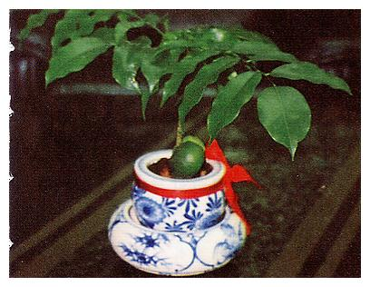
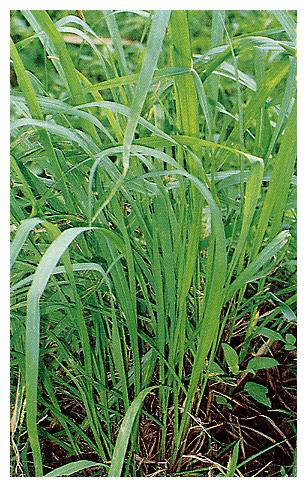
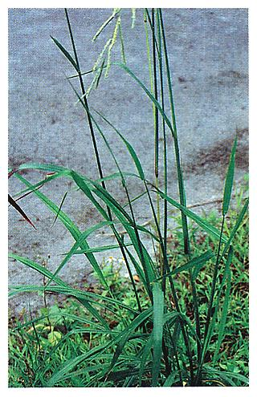
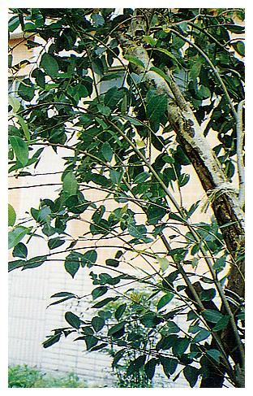

| 編號 | 照片 | 名稱 |
| 01 | 掃帚菊、帶馬蘭 | |
| Aster subulatus Michaux | ||
| 菊科 Asteraceae | ||
| 介紹 | 一年生草本，全株光滑無毛。莖直立，高達1m以上，纖細，有稜。葉線形或線狀披針形，楔基，互生，無柄，略抱莖，葉灰綠色，葉緣之鋸齒不明顯或全緣，頭狀花著生於各分枝之頂端，形成掃把狀之圓錐花序；頭狀花，小型，由微小淡紫白色舌狀花和短小的黃色管狀花所組成；小苞片2～3列，直立，不反捲，線狀披針形；花冠常被蓋在冠毛下。瘦果扁平，被淡紅色冠毛。 掃帚菊原產北美，七十多年前引進台灣，現已歸化本島各地，莖乾燥後用以製造掃帚。 | |
| 編號 | 照片 | 名稱 |
| 02 |  | 栗豆樹、綠元寶 |
| Castanospermum australe | ||
| 蝶形花科 Fabaceae | ||
| 介紹 | 常綠中喬木，株高可達12m以上，奇數羽狀複葉，小葉互生，披針狀長橢圓形，長約8～12公分，全緣，革質。花腋生，黃橙色，莢果長達20cm，種子橢圓形，大如雞蛋，可烘烤食用。枝葉翠綠，幼株耐陰，成株須日照充足，性喜高溫，冬季忌長期潮濕。 栗豆樹多做為室內盆栽。 | |
| 編號 | 照片 | 名稱 |
| 03 |  |
細葉雪茄花、紅丁香 |
| Cuphea hyssopifoliat | ||
| 千屈菜科 Lythraceae | ||
| 介紹 | 常綠小灌木，全株平滑，莖上略有皮孔，葉線形或披針形，葉小而且多。花腋生，粉紅或紫紅色也有白色的花，花萼六裂，花瓣六枚，果為蒴果，長橢圓形。 繁殖主要以阡插，播種亦可。 | |
| 編號 | 照片 | 名稱 |
| 04 | 狗牙根、百慕達草 | |
| Cynodon dactylon (L) Pers. | ||
| 禾本科 Gramineae | ||
| 介紹 | 多年生草本，具匍匐莖，節處長根，著生花葉之稈直立，高達15～40cm。葉線形，內曲，淡綠色，長5～8公分，寬4～15公厘，葉片基部具長毛，葉鞘平滑具龍骨，葉舌極短；花序為3～6指狀排列之穗狀花。 通常群聚於河堤，路邊，操場，草原，是很好的水土保持植物。 | |
| 編號 | 照片 | 名稱 |
| 05 |  |
蠅翼草 |
| Desmodium triflorum(Linn.)DC | ||
| 豆科 Leguminosae | ||
| 介紹 | 一年生細小草本，莖細而呈匍匐狀，全株被有短伏狀白毛。葉為三出複葉，葉柄短約0.5公分。小葉膜質，倒卵狀楔形或截形，先端微凹陷或截形，表面無毛，背面密生白毛；頂小葉長6～10公厘，寬7～8公厘，托葉銳尖形，長3～4公厘。花單立或2～3枚叢生葉腋，花梗細長，長約7～10公厘，萼長2公厘，有毛，花冠紫紅色。 | |
| 編號 | 照片 | 名稱 |
| 06 |  |
升馬唐 |
| Digitaria ciliaris (Retz)Koel | ||
| 禾本科 Gramineae | ||
| 介紹 | 一年生草本，稈細弱，基部膝曲，具分枝，50～100公分高；葉片線形，8～20cm長，5mm～12mm寬，平行脈，不明顯，葉鞘具柔毛，抱莖，葉舌脈質，1～3mm長，截形，花序為稍聚集之3～8枚指狀總狀花序，花序長5～15公分；穗軸0.6～1mm寬，邊緣鋸齒狀。 小穗均排在穗軸之一側，約3mm長，綠或紫色。 | |
| 編號 | 照片 | 名稱 |
| 07 |  |
大絨馬唐 |
| Digitaria magna(Honda)Tsuyama | ||
| 禾本科 Gramineae | ||
| 介紹 | 稈細長，基部屈曲，高20～30cm，葉片線狀披針形，先端尖，長7～10公分，寬3～5公厘，覆有長密絨毛；葉鞘鬆，為節間之2倍長，具龍骨，覆有密絨毛；葉舌膜質，先端鈍，長1公厘，光滑；花序為指狀排列之總狀花序，長6～9公分，穗軸狹窄有翅。 | |
| 編號 | 照片 | 名稱 |
| 08 |  |
牛筋草、蟋蟀草 |
| Elusine indica (L.) Gaertn. | ||
| 禾本科 Gramineae | ||
| 介紹 | 一年生草本，莖叢生，葉線狀披針形，葉鞘兩側扁壓，穗狀花序3～9cm長，小穗具4朵以上，小花約5mm長，囊果卵形，約1.5mm長。 牛筋草根系發達強健，不易從地面拔起，莖葉強韌耐踐踏。 | |
| 編號 | 照片 | 名稱 |
| 09 |  |
野塘蒿 |
| Erigeron linifolius Willd. | ||
| 菊科 Compositae | ||
| 介紹 | 一年生或越年生草本，莖通常在上部呈叉狀分枝，被有灰白毛，高30～60公分，下部葉為倒披針狀，葉緣有時有鋸齒著生粗毛，上部葉互生，線形，有時有微鋸齒，長4～6公分，寬3～6公厘，兩面著生粗毛，頭狀花呈總狀著生，黃綠色，總苞鐘形，裂片淡綠色，兩性花著生中央部位，雌花則著生周圍，果為瘦果，冠毛白色。 | |
| 編號 | 照片 | 名稱 |
| 10 |  |
亞里垂榕 |
| Ficus binnendi jkii 'Alii' | ||
| 桑科 Moraceae | ||
| 介紹 | 常綠小喬木，株高可達6m，葉互生，線狀披針形，革質，葉面曲角，主脈凸出，淡紅色，葉片下垂狀。 耐旱耐瘠，成長迅速。 | |
| 編號 | 照片 | 名稱 |
| 11 |  |
菩提樹、阿思多羅樹、思維樹、畢缽羅樹 |
| Ficus religiosa Linn. | ||
| 桑科 Moraceae | ||
| 介紹 | 多年生落葉喬木，葉互生，闊卵形，葉表中肋及側脈明顯；先端披針形，尖細，葉柄長。隱花果腋生，成對，無柄暗紫色。 菩提樹之落葉是在夏初，老葉迅速掉光，又快速地長出新芽，從落葉到新芽長出只須一至二週，新芽剛長出時呈淡淡之紫紅色，接著轉變成黃綠，再過一星期即變成翠綠。由於葉肉厚硬，葉脈網紋密集，用酸或鹼處理後可製成美麗之葉脈標本。 菩提樹之隱花果在台灣北部，因氣溫低，多雨，往往尚未成熟就紛紛掉落。在台灣南部，隱花果能正常發育，當外皮變成暗紅色，就是成熟了。隱花果初形成時，取出其中之小花，以清水煮後，喝其湯液可發汗退熱，木材可製器具。菩提樹是彰化縣之縣樹。 | |
| 編號 | 照片 | 名稱 |
| 12 |  |
水蜈蚣 |
| Killinga brerifolia Rottb. | ||
| 莎草科 Cyperaceae | ||
| 介紹 | 多年生草本，根莖橫臥伸長，稈直立，柔軟，高10～25cm，葉寬2～3mm，花穗無梗呈頭狀花序，單立著生莖頂，球形或卵球形，密生多數小穗，淡綠色，苞葉三枚，披針形，不等長，雄蕊三或二，瘦果倒卵形。 | |
| 編號 | 照片 | 名稱 |
| 13 |  |
血桐、橙桐、面頭果 |
| Macaranga tanarius (L.)Muell.-Arg. | ||
| 大戟科 Euphorbiaceae | ||
| 介紹 | 常綠喬木，枝條青綠而帶粉白色，樹幹鋸開後髓部常分泌紅色液體，故名血桐。葉呈盾狀，闊卵形，全緣或具不明顯鋸齒，表面光滑，背面具灰白短毛，葉長13～20cm，寬10～15公分，葉柄長度與葉身相近，花序成腋生圓錐花序，雌雄異株，不具花瓣，雄花具萼片4枚，雄蕊十枚，雌花具雌蕊1枚，柱頭二裂，子房2～3室，蒴果表面堅硬而有腺體，徑約1公分。 血桐之根、幹、樹皮及穗可入藥，具止血止痢及催吐功效。主治痢疾，止咳解熱，咳血，心材有抗癌作用，根可治粉散劑，可催吐，樹皮及葉外用治皮膚炎。勿大量服用(有毒)中毒時可用催吐法或服蕹菜湯解毒。 | |
| 編號 | 照片 | 名稱 |
| 14 |  |
洋玉蘭、荷花玉蘭 |
| Magnolia grandiflora L. | ||
| 木蘭科 Magnoliaceae | ||
| 介紹 | 常綠喬木，樹皮淡褐色，葉背、芽及幼枝皆有柔毛。葉濃綠色，有柄，革質，長卵形。花頂生，淡黃白色，直徑可達24～30cm，有清郁香味，花冠淺杯狀，著生於花托基部，花被九至十二片，倒卵形，果實橢圓形，種子紅色，花期五至六月。。 | |
| 編號 | 照片 | 名稱 |
| 15 | 水杉 | |
| Metasequoia glyptostroboides | ||
| 杉科 Taxodiaceae | ||
| 介紹 | 原產中國，1956年始引入台灣，落葉性針葉大喬木，枝條無毛，新葉色綠，漸變褐灰。葉對生，平面排成二列，線形，銳尖頭，無柄而上面青綠裡面淡綠，葉與小枝成羽狀聚落。花單性，雄花腋生或頂生成總狀花序或圓錐花序，苞呈角狀卵形或倒卵形。雌花單生，球果下垂性，稍呈四角狀球形或短圓柱形。種子具鱗片5～9，兩側有翼，扁平倒卵形而尖頭。 除做為庭園觀賞外，是重要的木材。 | |
| 編號 | 照片 | 名稱 |
| 16 |  | 大黍、天竺草 |
| Panicum maximum Jacq | ||
| 禾本科 Gramineae | ||
| 介紹 | 多年生，稈直立，近地面處紫紅色。根莖粗大各節密佈短毛；葉片狹長30～75公分，寬約2.5～3.5公分，平行脈；葉鞘具疣狀短毛或無毛；葉舌4～6mm長。圓錐花序展開，約20～30公分長，分枝腋間具長柔毛，基部分枝作輪生狀，小穗3～3.3mm長，鈍形，通常無毛。 大黍原產熱帶非洲，目前已是本省引種栽培之經濟牧用禾草。 | |
| 編號 | 照片 | 名稱 |
| 17 |  |
舖地黍、魚雷草 |
| Panicum repens Linn. | ||
| 禾本科 Gramineae | ||
| 介紹 | 多年生草本，地下莖發達，稈直立，近實心，葉舌短，約0.5mm長，具纖毛，圓錐花序開展。小穗具二朵小花，橢圓形，約3mm長，先端尖銳，淺綠色。 生長在向陽之海邊，河岸及潮濕之操場，原野。 | |
| 編號 | 照片 | 名稱 |
| 18 |  |
毛穎雀椑 |
| Paspalum. Conjugatum Berg. | ||
| 禾本科 Gramineae | ||
| 介紹 | 多年生草木，根廣延呈匍匐狀，桿高20～60cm。無毛或節處有軟毛。葉鞘扁平，葉舌膜質，長約0.5cm，葉線形扁平質薄，8～12cm,寬5～15mm。邊緣著生綠毛，上下表面無毛。花為總狀花序，成對叢生，細長，花軸狹扁平，小穗單生圓形乃至卵形，長1.5～2mm，青黃色。 | |
| 編號 | 照片 | 名稱 |
| 19 | 兩耳草 | |
| Paspalum. Conjugatum Berg. | ||
| 禾本科 Gramineae | ||
| 介紹 | 多年生草本，具長匍匐莖，稈扁平，近乎實心，稈節有毛，葉舌由一圈纖毛所成。花序由二總狀花序配對而成，總狀花序纖細，長約6～12公分，小穗軸約0.8mm寬，鋸齒狀，穗柄約1公厘長，小穗兩列。 生長於濕地或半陰暗處。 | |
| 編號 | 照片 | 名稱 |
| 20 | 長葉雀稗 | |
| Paspalum longifolium Roxb. | ||
| 禾本科 Gramineae | ||
| 介紹 | 稈無毛，高約80～130公分，葉片長披針形，10～20公分長，5～8公厘寬；葉鞘較節間為長，扁壓有脊，邊緣具疣狀長毛，葉舌膜質，1～2mm長，背部具微毛；總狀花序7～20枚約5～8公分長，穗軸2～4mm寬，邊緣粗糙。 長在田畦旁，沼澤地周圍及較濕之山坡地。 | |
| 編號 | 照片 | 名稱 |
| 21 | 繁星花 | |
| Pentas lanceolata(Forsk) Schum. | ||
| 茜草科 Rubiaceae | ||
| 介紹 | 多年生草本植物，葉對生、卵形、葉上有細毛，花生於莖頂，繖房花序，花冠筒狀五裂、花色白、粉紅或紅，果為蒴果，可用播種或扦插繁殖。 | |
| 編號 | 照片 | 名稱 |
| 22 |  |
羽裂蔓綠絨 |
| Philodendron selloum | ||
| 天南星科 Araceae | ||
| 介紹 | 常多年生草本蔓性植物，莖呈蔓性或半蔓性，莖能生長氣根攀附他物生長，葉形有羽狀裂葉，掌狀裂葉等，葉色綠或黃綠。葉脈明顯，葉緣羽狀深裂，葉柄粗大，肉穗花序，單性花，無花被總梗甚短。佛燄苞綠色，紅色宿存性。漿果白色至橘色。 蔓綠絨類植物耐陰性強，繁殖可用播種，分株，阡插，春、夏為適期，一般以阡插最實用，將莖剪下2～4節，將下部葉片除去，斜埋土中，保持濕度2～3週能發根，本類植物性喜高溫多濕，忌強光直射。 | |
| 編號 | 照片 | 名稱 |
| 23 |  |
洋商陸、美國商陸 |
| Phytolaccd americana L. | ||
| 商陸科 Phytolaccaceae | ||
| 介紹 | 多年生草本植物，莖及葉柄常帶紫紅色，高約40～180公分。葉互生，橢圓形或披針狀橢圓形。全緣長約8～20公分，寬約4～9公分，春至秋季開花，總狀花序腋出或頂生，花軸紫紅色，花冠白色或淡粉紅色，雌蕊心皮綠色，雄蕊十枚，近乎白色，漿果扁球形，成熟後黑紫色。 洋商陸之根有治水腫，消腫之效，可治慢性腎炎，腳氣，心臟病水腫；葉具行水利尿之效，可治動脈硬化；花可治昏暈，健忘，嗜睡等症。外敷可治瘡癤痛腫，無名瘡腫，皮膚病，寄生虫病。 全草有毒，不可採食。 | |
| 編號 | 照片 | 名稱 |
| 24 |  | 大理草、毛花雀稗 |
| Psapalum dilatatum Poiret | ||
| 禾本科 Gramineae | ||
| 介紹 | 多年生草本，稈基部彎曲，無毛，高50～150公分。葉片線形，除基部近葉舌處有長毛外，其他部位均無毛；葉舌長2～4mm，截形，膜質，無毛；葉鞘無毛或下部著生柔毛。總狀花序3～8疏生於中軸，長5～9公分，中軸基部有長毛叢，小穗卵形，長3～4公厘，基部圓形，成對排列，通常為無梗，有時有梗。 | |
| 編號 | 照片 | 名稱 |
| 25 | 鼠尾粟 | |
| Sporobolus fertilis(Steud) W. D. Clayton | ||
| 禾本科 Gramineae | ||
| 介紹 | 多年生草本，稈叢生，直立；葉舌由一圈短毛所成約0.2mm；花序為緊縮之圓錐花序，長約20～40公分，葉狹長線形，中肋明顯。小穗具一朵小花，披針形約108mm長，灰綠色或褐紫色，小蕊3枚甚小。 通常長於較乾燥之路邊，山坡及河床，操場。 | |
| 編號 | 照片 | 名稱 |
| 26 |  | 堇寶蓮、肯氏蒲桃 |
| Sporobolus fertilis(Steud) W. D. Clayton | ||
| 禾本科 Gramineae | ||
| 介紹 | 常綠中喬木，樹皮灰白色，株高可達10m，葉對生，有柄，卵狀長橢圓形，革質，先端銳尖，長8～16公分，寬4～9公分。春至夏季開花，短圓錐花序，花冠白或帶紫色，漿果近球形，暗紅至紫黑色 | |